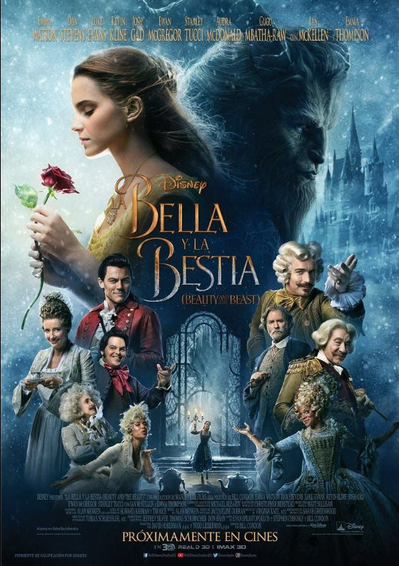

Mis Gustos
- Música: Pop, Rock, Urbano y un poquito de todo
- Películas Favoritas
- Comida favorita: Pizza y helado
| Título | Género | Lo que más me gusta | Portada |
|---|---|---|---|
| Orgullo y Prejuicio | Novela / Romanticismo | La historia de amor clásica y los diálogos |  |
| La bella y la bestia | Fantasía | La música y el mensaje que da. |  |
| Mulán | Aventura | La valentía |  |
Mis Aficiones
- Pintar
- Acuarela
- Óleo
- Digital
- Bailar
- Tocar Piano
- Escuchar música
- Mirar dibujitos
Mis Metas y Deseos
- Terminar mis estudios
- Viajar
- Aprender aún más
- Disfrutar cada día
- Aprender a tocar el violin
- Jugar tenis o básquet
- Ir a más conciertos
- Aprender fotografía
- Escribir un blog personal y también un libro